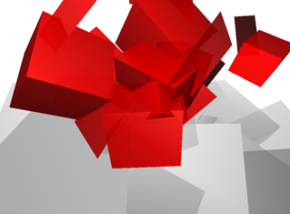

First, insert another matrix hub module below the first one.
Then insert a label
module (modules > matrix > label) between the
two hubs.

Name the label "cubes" in the inspector.
Now, select the hub module and activate modules > matrix
and modules > matrix > goto.
Enter "cubes" in the "label name" field of the
goto module's
inspector.
Then copy the matrix-goto-subhierarchy and paste it three times to
the empty matrix out connectors of the lower hub.
Select one of the matrix modules and switch to object mode.
When moving the handle, you will see that you change the position of
a copy of the three previously created cubes.
After entering different positions for all four matrix modules, you
will recognize, that you got 15 cubes altogether.
Change the rotation of each of the transform modules as well to achieve
a relatively even distribution of the cubes in the lower half of the
space before the camera's eyepoint.
When you switch to play mode, you should see something like this:
Insert an attribute hub module above the identity module (modules
> attributes > attribute hub) and connect a color attribute
module to it.
Set the values of the color module to a half transparent light gray (0.7,
0.7, 0.7, 0.5).
Finally, after adding a fog module and finding an appropriate value for
it's "end" value (which depends on the positioning of your cubes)
you should get a result similar to the following image:
Congratulation, if you managed to get this far. With the knowledge
you got so far, you can already create a lot of interesting projects
just by playing with the software.
Excuse me, if you tried but didn't get this far. It's certainly
my fault. Feel free to blame me.
If you want, you can have a look at my version of the project
which I created while writing this tutorial: tutorial1_background.kds
-------
I underestimated the amount of work necessary to create a tutorial
like this. That's why I will stop here. If I get some feedback
from you about the usefulness of the tutorial I might continue it.
But if you are interested, you may examine the project after
the next step (foreground) is completed:
tutorial1_foreground.kds
